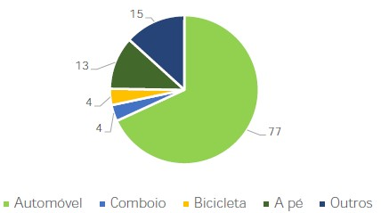

Inquérito à mobilidade dos funcionários dos municípios de Aveiro
4. Qual o transporte que utiliza frequentemente na deslocação entre casa e o seu local de trabalho?

Na questão 4, setenta e sete dos cento e dezoito participantes indicaram que se deslocam de casa para o trabalho em automóvel, o que se revela não ser uma resposta fora do comum, visto que a utilização do veículo particular é preferencial na sociedade. Seguidamente está a opção “outros” que, como foi referido acima, é uma combinação de transportes durante a deslocação, com 15 respostas. Em 7 dessas combinações é selecionada a opção automóvel, fazendo um total de 84 utilizadores de automóvel. Na terceira posição, a opção mais escolhida foi a pé com 13 respostas o que se revela ser um dado positivo.